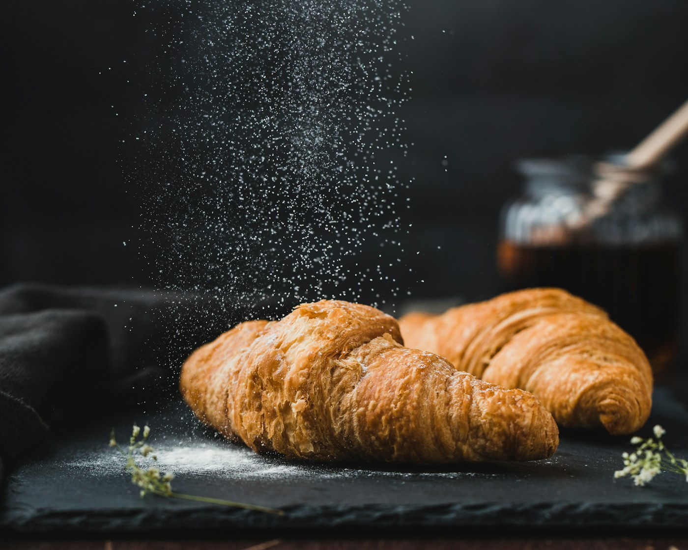
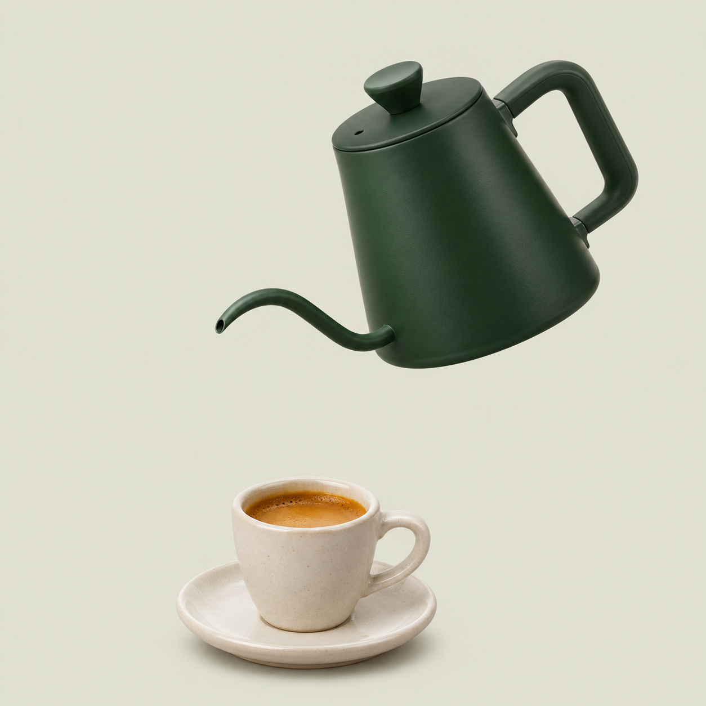
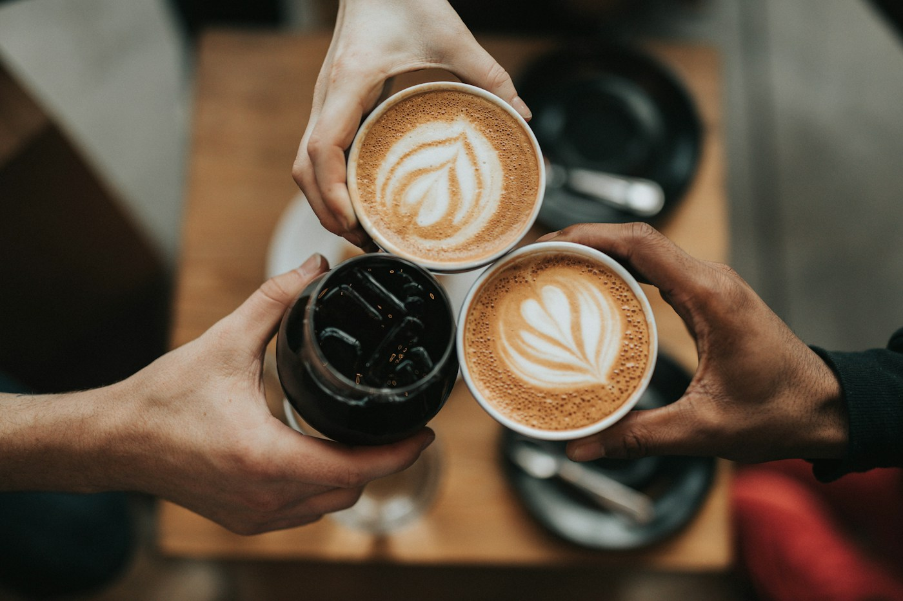

Quedate
un ratito.
Café de especialidad, pan de masa madre y algo rico para acompañar.
Explorar la carta

Un pequeño
ritual.
Agua, café y unos segundos para bajar un cambio. Tu próxima pausa empieza acá.

Café servido. Tiempo para vos.
La pausa también cuenta.

El primer sorbo, el pan que se comparte y una conversación que se alarga. Ese es el plan.
Tu pausa,
para llevar.
Revisá lo que elegiste. Este pedido es una demostración y no se envía al café.
Preparado para el camino.
Imaginado para disfrutar.
- Tu bolsa está vacía. Elegí algo de la carta.
Total $0